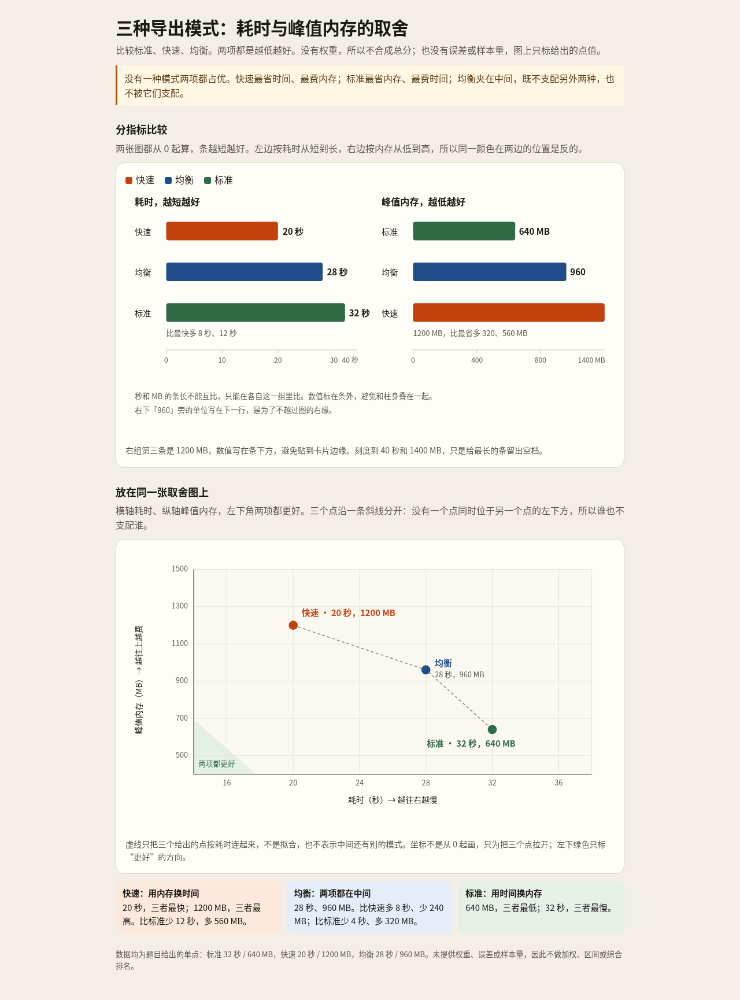

Grok 4.7 · visual-explanation · 超时题重测
原题、原始回复和实际渲染。成本与质量分开呈现；本轮不做模型数值评分；逐题复核并非盲评。本轮仅对 5 个超时题各追加 1 次；原失败记录保留，未继续自动重跑。
完整结论与逐题复核 · 原始汇总数据
B04 正常交付；D03 服务端完成但 CLI 漏记末条回复；C01、C04 再次超时；B03 服务端流中断。交付状态与内容质量分别判断。
原轮画廊（保留所有原始失败）
B03 实例边界与反向控制关系
画给现场联调人员看的采集架构。东站、西站各有一台采集器、一个网关、一个缓冲库，都是独立实例。站内：采集器发送读数给本网关，网关读写本站缓冲库。中心有一个汇总服务和一个归档库。两站网关分别向汇总服务发送读数，汇总服务写归档库；汇总服务还分别向两站网关发出补传请求。需要能分清站点、实例和两种相反方向的交互。传输协议、认证、是否有消息队列均未决定，不替我设计。
visual-explanation · 第 1 次
Grok 4.7 high · 流结束异常，无最终交付 · 101.81 s
中断前消息（无最终回复） · 匿名评审文本 · 服务错误，无图稿：101.81 秒、7 次请求；OpenCode 报 litellm.APIConnectionError：Upstream stream ended prematurely。未生成文件，无法评估图形质量。不能把退出码 0 当作成功。
回复原文
我先读取本题指定的 skill，再按现场联调视角画采集架构。
架构要分清站点、独立实例和两条相反的交互，我按图示技能来排版，不补协议、认证或消息队列。
节点会超过常规上限，我按分区架构来画：东站、西站各自独立，中心单独成区，两种方向分开标。
图按现场联调来排：左东站、右西站、中下是中心；站点用分区，实例各自成盒，读数和补传分实线与虚线。协议、认证和消息队列都不画。
B04 可选关系与双端基数
向排课人员解释以下对象关系，不需要数据库实现。一个课程可以暂时没有课次，也可以有多个课次；每个课次恰好属于一个课程。每个课次由 1 到 2 名讲师授课；一名讲师可以暂时没有课次，也可以讲多个课次。每个课次最多使用一个教室，也允许不使用教室；一个教室可以对应多个课次。这里的教室关系只记录归属，不说明时间冲突规则。字段、主键和排课冲突策略都尚未设计。用合适的关系图让人看清，尤其是没排课、合讲、不使用教室这三种情况。
visual-explanation · 第 1 次
Grok 4.7 high · 正常交付 · 898.23 s
原始最终回复 · 匿名评审文本 · artifact-0.html · 手机预览（artifact-0.html） · 完成，关系表达正确：898.23 秒、18 次请求。diagram-design 图稿清楚表达课程 1 ↔ 课次 0..*、课次 0..* ↔ 讲师 1..2、课次 0..* ↔ 教室 0..1；三个例子解释未排课、合讲和不用教室。手机需要图内横向滚动，本题未要求手机适配。一次修正基数的模型响应耗时 522 秒、输出 38513 token。

回复原文
课次是四者的汇合点。一门课可以还没有课次；一节课恰好属于一门课，由 1 到 2 名讲师讲，教室则可以不用。图在 `/work/scheduling-object-relations.html`。
数字写在被计数的那一端：
| 关系 | 靠近这一侧 | 含义 |
|---|---|---|
| 课程 — 课次 | 课程是 1，课次是 0..\* | 每节课只属于一门课；一门课可以没课次，也可以有很多节 |
| 课次 — 讲师 | 课次是 0..\*，讲师是 1..2 | 讲师可以没课，也可以讲很多节；每节课一名或两名，不能没人，也不能三人合讲 |
| 课次 — 教室 | 课次是 0..\*，教室是 0..1 | 一间教室可对应很多节；每节课不占房间，或只占一间 |
下半页用三个例子把空的一侧画出来：线性代数还没有课次，林老师本学期无课；周三第 3 节由周、陈合讲；周五研讨只记了赵老师，不使用教室。教室这条线只记归属，不判断那个时间空不空。字段、主键和冲突策略都还没设计。
C01 不同单位的真实数值比较
给评审做一个中文、静态、单文件、离线可打开的 HTML，桌面和手机都能读。比较三种导出模式：标准模式耗时 32 s、峰值内存 640 MB；快速模式耗时 20 s、峰值内存 1200 MB；均衡模式耗时 28 s、峰值内存 960 MB。两项指标都越低越好。用图让人看清取舍，不能只放数字卡片或表格；没有权重，不要合成总分，也没有误差或样本量数据。
visual-explanation · 第 1 次
Grok 4.7 high · 超时，以下文件未完成最终交付 · 900.03 s
中断前消息（无最终回复） · 匿名评审文本 · artifact-0.html · 手机预览（artifact-0.html） · 再次超时，残留图有刻度错误：900.03 秒、12 次请求，保留离线 HTML。条长之间的比例基本正确，但“40 秒”末端位置按前面刻度只对应 34.375 秒，“1400 MB”只对应约 1203.282 MB。手机上分组条图整体缩小、文字难读，散点图有独立手机布局。未完成最终交付。

回复原文
Skill 要求用视图讲清比较，且用户只要静态单文件 HTML。两种指标都越低越好、没有权重，不能合成总分。我用同一坐标系的双指标条和帕累托散点把三种模式的取舍画出来，不做成数字卡片。
截图里散点标签压在点和连线上，手机把整张图缩到看不清。我改成从零起算的条形（文字不压在柱上），并给桌面和手机各放一版不互相遮挡的取舍图。
条形图在窄屏上挤成一团，960 还缺单位。我改成上下两张全宽条形，数值固定写在条外。
C04 帮助理解机制的交互
做一个离线、单文件中文 HTML，让新同事通过操作理解重试等待时间。初次请求发生在 t=0；若失败，第 i 次重试前等待 min(b×2^(i-1), 10) 秒。让读者调整基础等待 b（1、2、3 秒）和重试次数 n（0 到 5 次，初次请求不算重试），看到各次请求的发生时刻和累计等待。默认 b=2、n=3。用图体现等待间隔，不能只更新一个总数；假设前面的请求都失败以便展示完整安排。无需真的发送网络请求。桌面和手机都能操作。
visual-explanation · 第 1 次
Grok 4.7 high · 超时，以下文件未完成最终交付 · 900.0 s
中断前消息（无最终回复） · 匿名评审文本 · 再次超时，无页面：900 秒、3 次请求。某次模型响应耗时 729.346 秒、输出 42113 token，随后仅查询字体，未写 HTML。无页面，无法检查交互正确性；不是本地浏览器检查循环。
回复原文
D03 复杂内容的总览与必要细节
数字化平台的说明在 /input/fixtures/digitization.md。请做一份图解：让新同事先快速看懂全貌，也让值班工程师查清 OCR、索引和邮件通知失败时分别影响哪里。原文列出的内部单元和已知关系需要能在相关视图中找到，允许按理解需要组织多个视图，不限定图种或文件格式。不要补充未确定的协议、队列、重试调度或故障处理入口。
visual-explanation · 第 1 次
Grok 4.7 high · 服务端完成；CLI 末条日志缺失 · 476.74 s
服务端最终回复（CLI 日志缺失） · 匿名评审文本 · artifact-0.html · 手机预览（artifact-0.html） · 有完整产物，CLI 漏记最终回复；表达仍需改进：476.74 秒、42 次请求。服务端 response-042 正常 stop 并返回最终说明和链接，CLI 事件日志漏记末条文本。am 页面保留 14 个内部单元、状态顺序和主要失败规则；桌面高 6218 px，缺少紧凑关系总览，多张表重复。将存储之间的箭头用于表达先后、再靠文字说明实际发起方，削弱图的直观性；“索引成功前不可用/无本次结果”超出材料对索引写入可见性的保证。

回复原文
新同事先看区域和八步主链。值班时按作业状态区分三条失败：OCR 失败停在「失败」，索引失败停在「待索引」且不重跑 OCR，邮件失败时作业仍是「已完成」，只重试发信。协议、队列、重试时刻和人工入口原文未定，图里没有补。
[file:///work/数字化平台图解.html](file:///work/数字化平台图解.html)